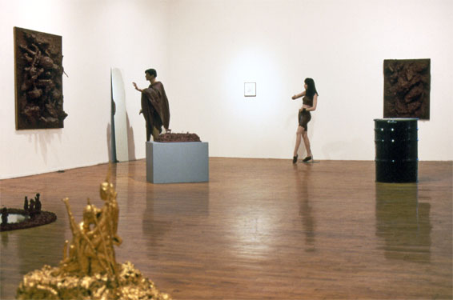
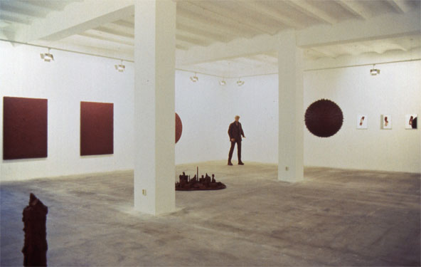
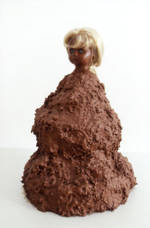
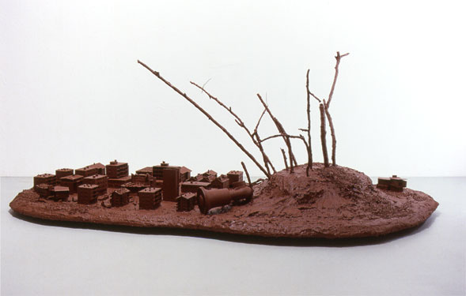
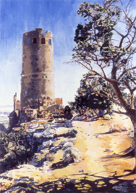
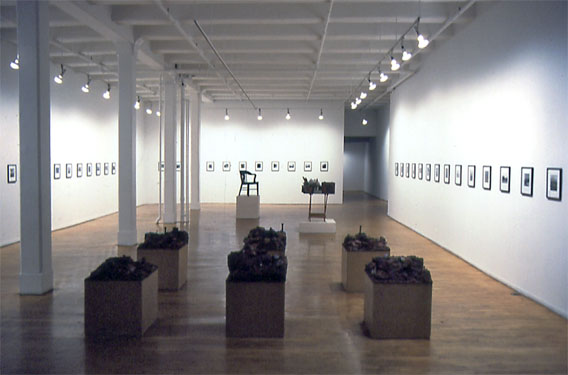

But the Flesh is Weak
Metro Pictures, 1990
New York

Galerie Isabella Kacprzak, 1990
Cologne, Germany

Rock Sucks/Disko Sucks
daadgalerie & Bruno Brunnet Fine Arts, 1992
Berlin

The Long March, the Narrow Road
Metro Pictures, 1993
New York

Homage an Karl May
Galerie Barbara Weiss, 1994
Berlin

The Middle of the Day
Metro Pictures, 1995
New York